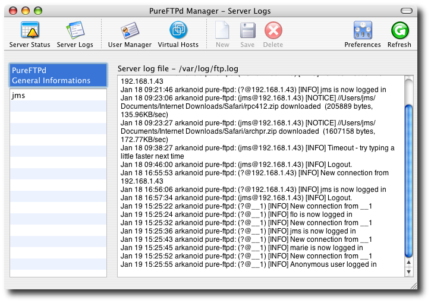
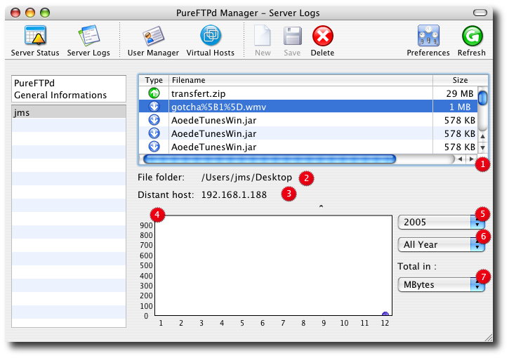

PureFTPd Manager - Server Logs PureFTPd Manager - Server Logs
PureFTPd Manager's server logs module lets you easily read your ftp system log file and and provides basic statistics on users' activity.
1. PureFTPd General Informations

When pure-ftpd is running, it will log connection attempt and users' transfers to using your system logging facilities (aka syslog). Your FTP server log file (ftp.log) is located in your /var/log folder.
2. User statistics
Users transfers are recorded at all time, if even if PureFTPd Manager is not running. If you select a user from the left user table, you can review its activity. Only uploads and downloads are recorded by the statistic system.

1. User's traffic. Uploads and downloads are symbolized by a up and down arrow respectively.
2. The folder the file was uploaded to or downloaded from.
3. The remote host address engaged in the transfer.
4. A graphical view representing your user's activity.
5, 6, 7. Use these options to change the graphical representation of your user's traffic.
Read more ...
|
 Server Status
Server Status
 User Manager
User Manager
 Virtual Hosts
Virtual Hosts